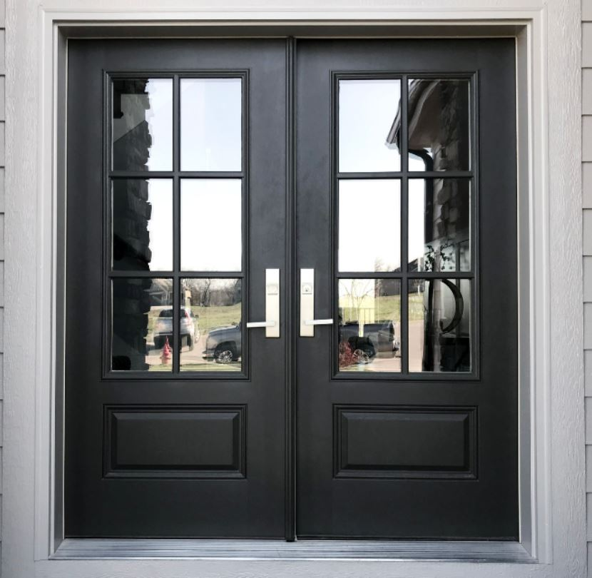
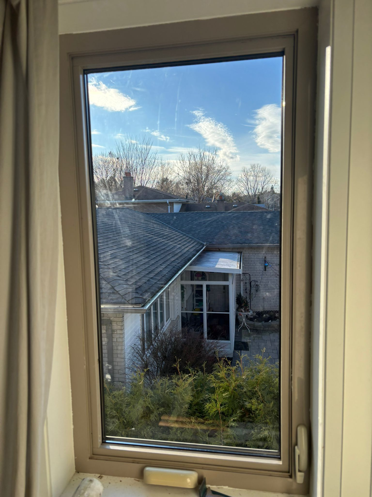
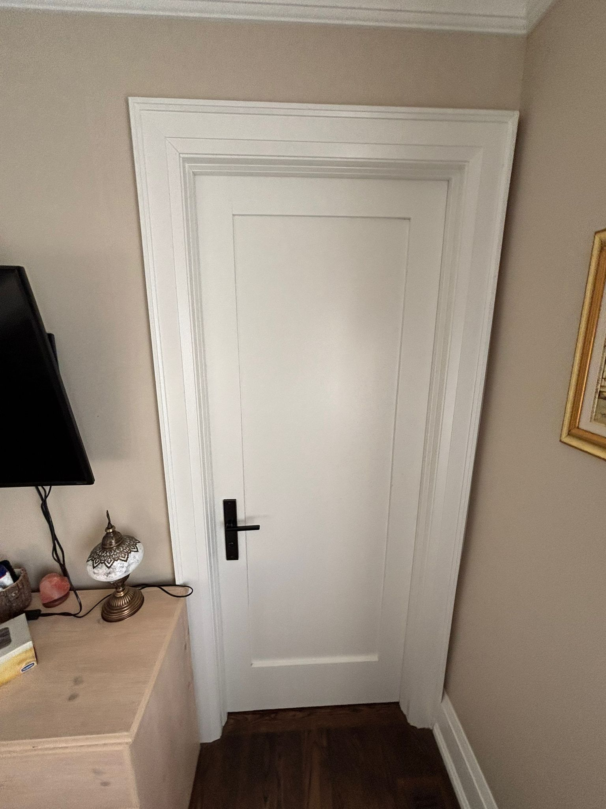
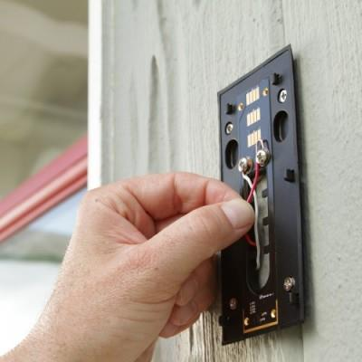
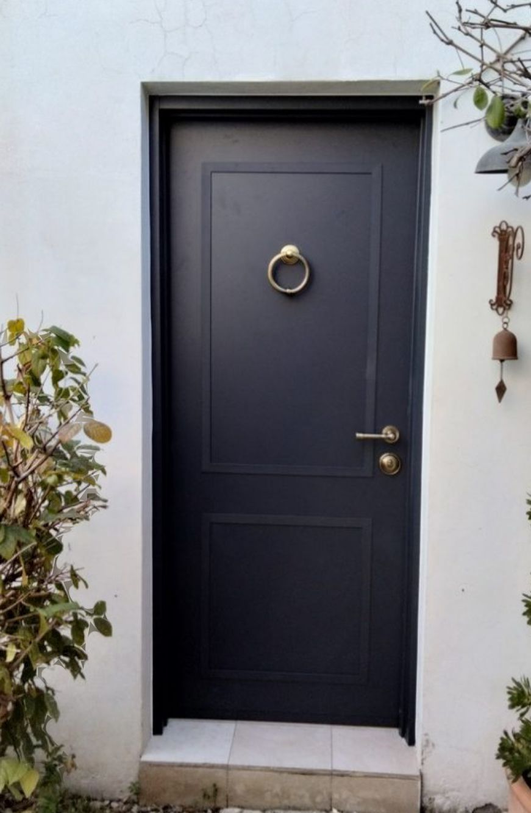
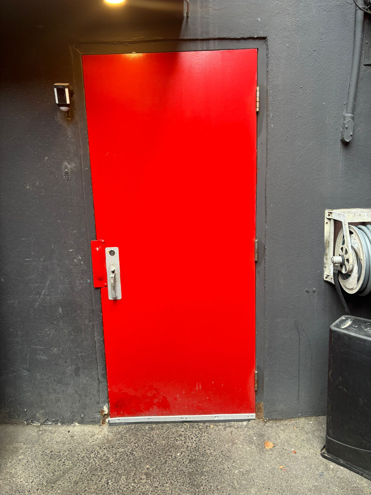
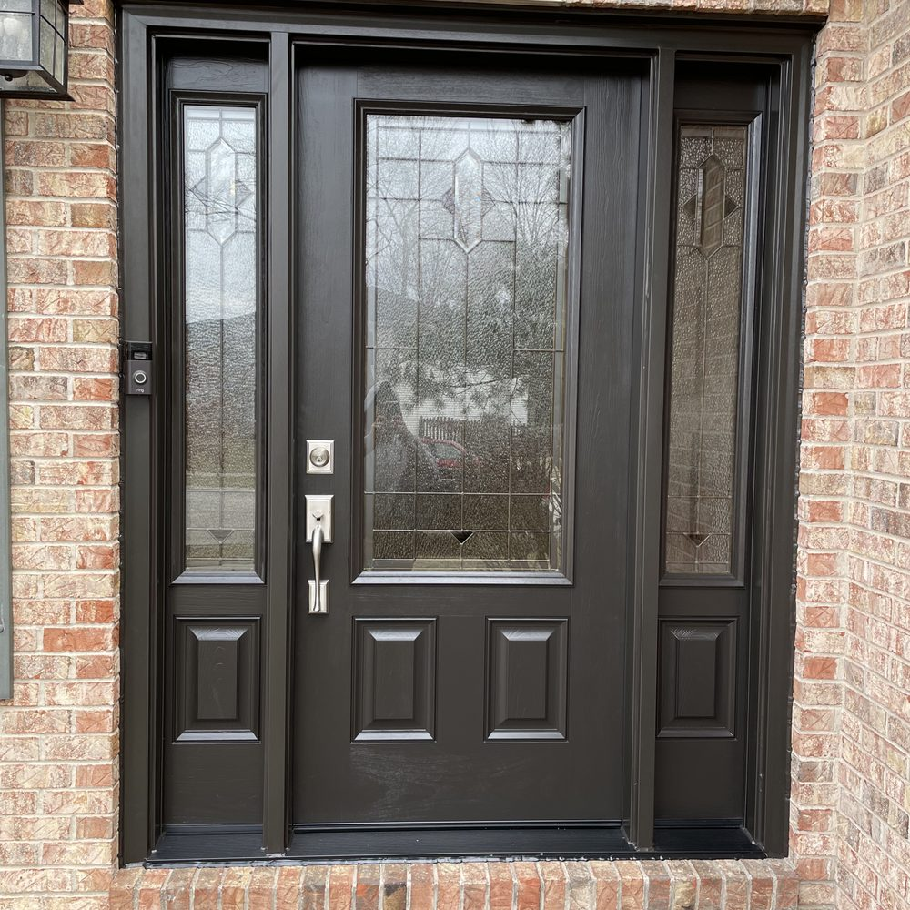
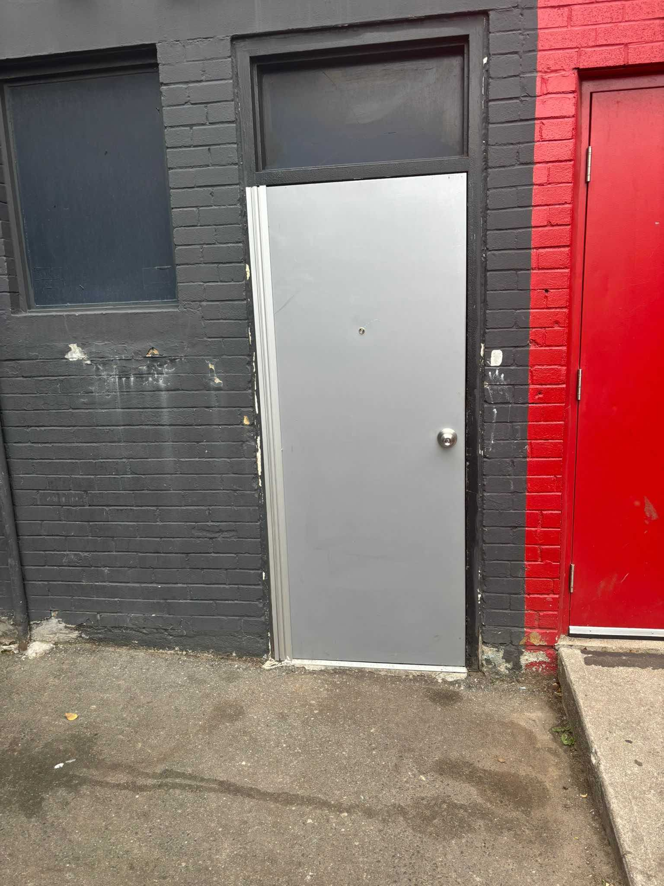
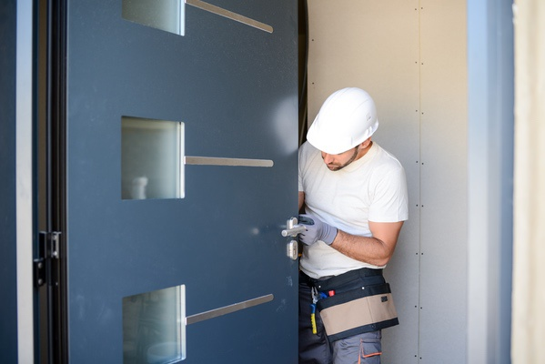
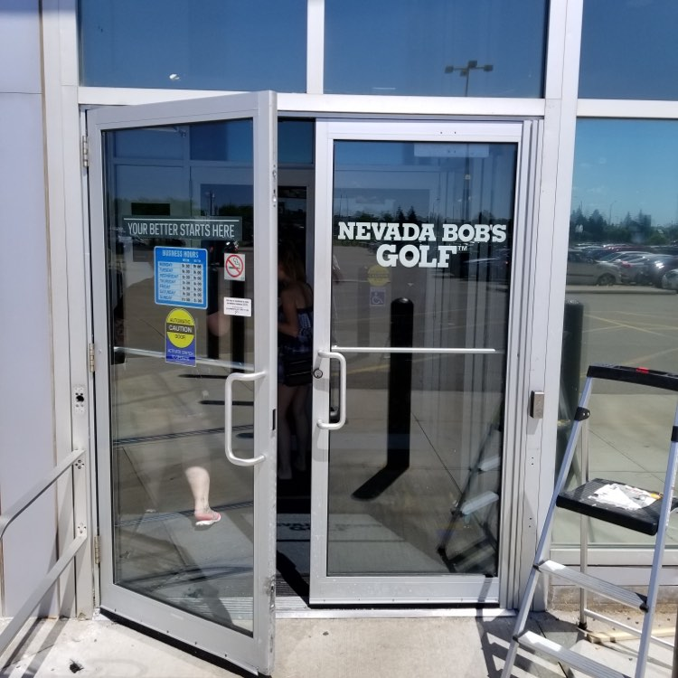

Welcome visitors to your home with a durable and stylish front door from LIONPRO. We offer a wide range of designs and materials to suit your taste and enhance your home's curb appeal. Whether you want modern, traditional, or custom options, we've got you covered.
Looking to upgrade other parts of your home? Discover our energy-efficient sliding windows.
CALL NOW (437) 970-4831Need repairs for your home entrance? Check out our front door services.

Upgrade your space with sleek and functional sliding windows from LIONPRO. These energy-efficient windows are designed for smooth operation, ample ventilation, and modern aesthetics. Perfect for living rooms, bedrooms, or offices, our sliding windows are a top choice for any renovation.
CALL NOW (437) 970-4831Interested in upgrading your windows? Explore our sliding window options.

Are your interior doors worn out, damaged, or not functioning correctly? LIONPRO specializes in fast, affordable interior door repairs. Call LIONPRO today and let us restore the functionality and aesthetics of your interior doors.
CALL NOW (437) 970-4831Ensure full home security. Discover our door lock repair services.

Ensure your guests can always announce their arrival with our professional doorbell repair services. LIONPRO ensures quick, reliable fixes for all doorbell issues.
CALL NOW (437) 970-4831Protect your business with robust solutions. Learn about commercial door repairs.

Your safety is our priority. Our expert team handles all types of door lock repairs, ensuring your home or business stays secure.
CALL NOW (437) 970-4831
Professional steel door repair services to ensure durability and security.
CALL NOW (437) 970-4831Need to restore aesthetics and strength? Check out our fiberglass door repair services.

Comprehensive repair solutions for your home doors to maintain style and functionality.
CALL NOW (437) 970-4831
Expert commercial door repair services for businesses of all sizes.
CALL NOW (437) 970-4831
High-quality fiberglass door repair services to restore strength and beauty.
CALL NOW (437) 970-4831
Reliable storefront door repair services to maintain accessibility and security.
CALL NOW (437) 970-4831